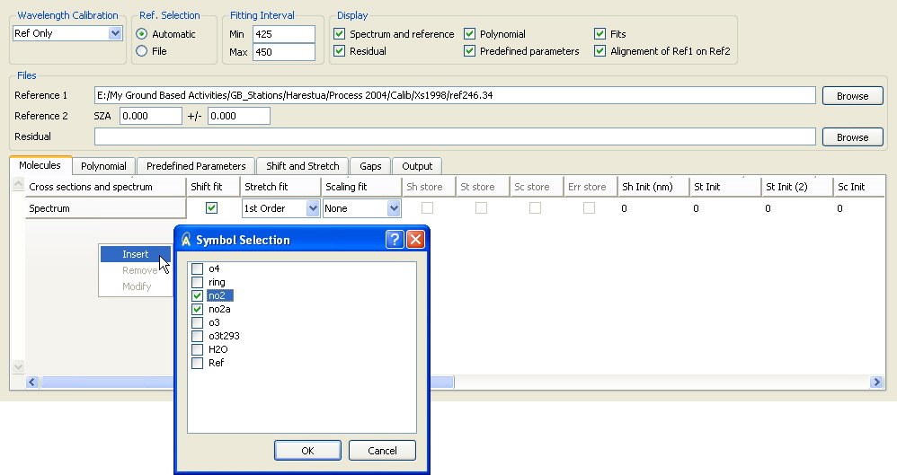

QDOAS Analysis Windows properties : Shift and Stretch page

Shift and stretch parameters allow correcting for possible misalignment between the various spectral items involved in the data evaluation (i.e. measured and reference spectra as well as absorption cross-sections). The equation below gives the wavelength transformation to apply when a shift and a stretch order 2 are fitted :
Less used, the scaling parameter consists in a wavelength dependent scaling factor to apply to a cross-section. It can also be order 1 or order 2.
To add an item to shift, stretch or scale, right-click the Insert option to open a dialog box with the list of available symbols (all cross-sections defined in the Molecules page and completed with Spectrum and Ref symbols). It is possible to select only one or several symbols. In the latter case, the same shift and stretch parameters will be applied to all items of the selection (in the example above, the same shift and stretch will be applied on both NO2 cross-sections). After the validation of the selection, QDOAS automatically updates the list of available symbols so that a symbol can not be selected twice.
Note that a symbol can not be removed from the Molecules page as long as it is used in the Shift and Stretch page.
Buttons in the Sh store, St store and Sc store columns are enabled only if the Analysis button is checked in the Output page of Projects Properties. They allow saving respectively the fitted values for the shift, the stretch and the scale. If buttons in the Err store column are checked, the standard deviations of the fitted parameters are also saved in the output file.
The shift, stretch and scale parameters are fitted non linearly by the Marquardt-Levenberg non-linear least-squares (NLLS) algorithm. This iterative method needs to start from an initial solution given by Init values of parameters to fit. The convergence parameters Delta are used by the algorithm to numerically calculate partial derivatives of the fitting function and to determine the direction of the steepest descent to approach the solution. There is one Init column and one Delta column for each parameter to fit (shift, stretch order 1, stretch order 2, scaling order 1 and scaling order 2).